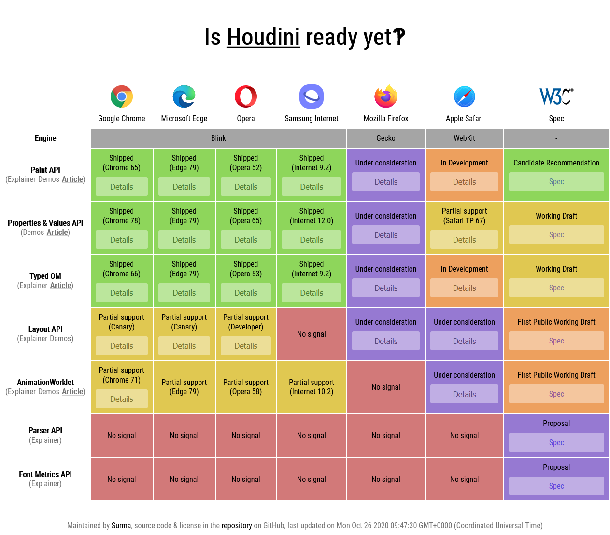

Въпреки всички функционалности, които предлага, бъдещето на CSSOM не е много сигурно. Това е така заради нещо, наречено CSS Typed OM, което е част от проекта the Houdini Project.
CSS Typed OM е разширение на CSSOM (който разглеждахме досега). CSS Typed OM представя CSS обекти като типизирани JavaScript обекти (вместо низове, както е при CSSOM). Това ни спестява ръчно конвертиране на низове в използваеми обекти с реален смисъл за нас.
При CSS Typed OM всички CSS стойности са представители на нов базов клас - CSSStyleValue, който има много наследници, представящи по-специфични типове CSS стойности:
- CSSKeywordValue
- CSSPositionValue
- CSSImageValue
- CSSUnitValue
- CSSMathValue
- CSSTransformValue
Има 2 начина за манипулиране на Typed OМ стоности - чрез attributeStyleMap (за писане и четене на вградени (inline) стойности) и computedStyleMap (за четене на пълните Typed OM стилове на обект). Например:
myElement.attributeStyleMap.set('font-size', CSS.em(2));
Код 10. Задаване на стойност за font-size на елемент myElement.
myElement.attributeStyleMap.get('font-size');
Код 11. Прочитане на зададена стойност за font-size на елемент myElement.
Код 12. Резултат от изпълнение горния ред.
const cs = $('.foo').computedStyleMap();
cs.get('vertical-align');
Код 13. Прочитане на зададена стойност за vertical-align на елемент от клас foo.
Код 14. Резултат от изпълнение горния ред.
cs.get('background-position').x;
Код 15. Прочитане на зададена стойност за background-position на елемент от клас foo.
Код 16. Резултат от изпълнение горния ред.
The Houdini Project представлява колекция от интерфейси (APIs) от ниско ниво, които позволяват на разработчиците да “разширяват” CSS с нови функционалности, използвайки JavaScript. И не само това, но им дава и възможност да се “закачат” в реалния процес по рендериране на браузъра и да му “кажат” как CSS правилата да бъдат приложени в този процес.
Спецификацията на Houdini се състои от 2 групи от интерфейси - от високо и от ниско ниво.
Интерфейсите от високо ниво са тясно свързани с процеса по рендериране на браузъра (style → layout → paint → composite) и включват:
- Paint API - позволява достъп до онази стъпка от процеса по рендериране, в която се определят визуалните свойства като color, background, border.
- Layout API - позволява достъп до онази стъпка от процеса по рендериране, в която се определят размерите, позицията и подравняването на елементите.
- Animation API - позволява достъп до онази стъпка от процеса по рендериране, в която слоеве се рисуват на екрана и се анимират
Интерфейсите от ниско ниво са основа, на която стъпват интерфейсите от високо ниво:
- Typed Object Model API
- Custom Properties & Values API
- Font Metrics API
- Worklets
The Houdini Project предлага много атрактивни възможности, но можем ли реално да се възползваме от него? В кои браузъри се поддържа?

Фигура 6. Кои функции на Houdini в кои браузъри се поддържат.